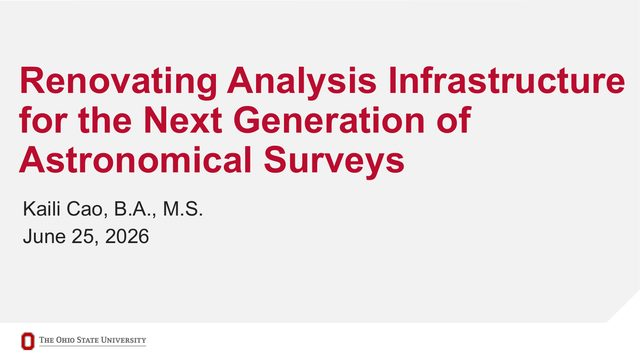
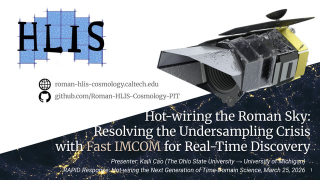
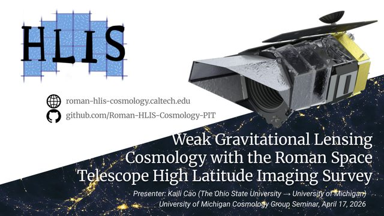
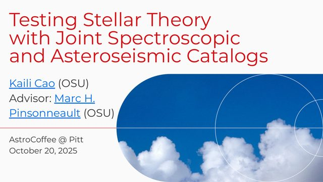
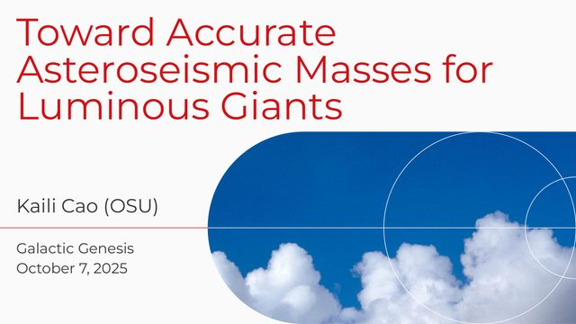

Jun 2026 · dissertation defense, The Ohio State University
My PhD in one talk
From stellar interiors to the large-scale structure of the Universe, and from theoretical modeling to data analysis.
About · Presentations
Talks I have given. Slides are linked as PDF files where available.
Five talks on different parts of my work. All talks follow, newest first.

Jun 2026 · dissertation defense, The Ohio State University
From stellar interiors to the large-scale structure of the Universe, and from theoretical modeling to data analysis.

Mar 2026 · contributed talk, RAPID Response, Caltech
How Effortless, then called Fast IMCOM, can reconstruct Roman's undersampled images fast enough for time-domain science.

Apr 2026 · seminar, University of Michigan
What Roman's High Latitude Imaging Survey can measure about the Universe, and the image reconstruction it depends on.

Oct 2025 · invited seminar, University of Pittsburgh
Thousands of red giants from APOKASC-3 as tests of stellar models: the first dredge-up, the red giant branch bump, and the masses of luminous giants.

Oct 2025 · invited talk (online), Galactic Genesis Working Group, SDSS-V
A new correction to the asteroseismic masses of luminous red giants, and how it changes their ages and the predicted first dredge-up.